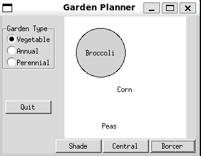

---
title: Using the Abstract Factory Pattern to Create a Garden Planner
---
classDiagram
class Garden {
<<abstract>>
+shade_plant() Plant
+centre_plant() Plant
+border_plant() Plant
}
class Plant {
+String name
}
class AnnualGarden
class VegetableGarden
class PerennialGarden
Garden <|-- AnnualGarden
Garden <|-- VegetableGarden
Garden <|-- PerennialGarden
Garden --> Plant : Instantiates
Chapter 7: The Abstract Factory Pattern
Notes
- The Abstract Factory Pattern is an extension on the concept of the Factory Pattern
- Rather than returning a subclass of a given class we instead use an abstract factory to return a family of subclasses from a family of related classes
- In other words, the Abstract Factory is a factory that returns groups of classes
- Those groups might then in turn use a factory to determine which class from the group is returned
- In other words, the Abstract Factory is a factory that returns groups of classes
- A traditional example is in GUI design. A program might need to support different styles of Widgets depending on the OS (Windows, Gnome, OS/X etc)
- One abstract factory might return the set of Windows widgets
- Another might return the set of Gnome widgets etc.
- Can then request specific widget’s from the respective factory instance
A GardenMaker Factory
Consider a simple program for planning out a garden
The program supports a number of different garden types
- Annual Gardens
- Vegetable Gardens
- Perennial Gardens
For each type of garden, we have the following requirements
- What are good border plants?
- What are good centre plants?
- What plants do well in partial shade?
Our Abstract factory class will be a
Garden- It returns the associated
Planttypes- In this case they will be specific instances of
Plantrather than distinct subclasses
- In this case they will be specific instances of
- Special concrete subclasses of
Gardenwill return different instances ofPlant, NamelyAnnualGardenVegetableGardenPerennialGarden
- It returns the associated
We can depict the resulting UML
The Plant Class
For this simple case, rather than defining a range of different classes we’ll look at one specific
Plantinstanceclass Plant: """ Represents a plant in a garden Attributes ---------- self.name : str Plant's name (common or scientific) """ def __init__(self, name) -> None: """ Create a new plant instance with the given name Parameters ---------- name : str name of the plant (common or scientific) """ self.name = name
The Garden Class
We first define our
Gardenbase class which provides three different methods for getting various plant types- In a more complex implementation these might be different classes from different hierarchies
class Garden(abc.ABC): """ Abstract class representing a garden Provides methods for retrieving plant's suitable for that garden. Subclasses should override the * `get_shade_plant` * `get_centre_plant` * `get_border_plant` methods to return the appropriate `Plant` instances """ @abc.abstractmethod def get_shade_plant(self) -> Plant: """ Retrieve a plant corresponding to this garden that can live in the shade Returns ------- Plant A shade-loving plant """ pass @abc.abstractmethod def get_centre_plant(self) -> Plant: """ Retrieve a plant corresponding to this garden that can live in the centre Returns ------- Plant A centre-loving plant """ pass @abc.abstractmethod def get_border_plant(self) -> Plant: """ Retrieve a plant corresponding to this garden that can live on the border Returns ------- Plant A border-loving plant """ passNow we implement our three specific class implementations
class VegetableGarden(Garden): """ Factory for a Vegetable Garden """ @override def get_shade_plant(self) -> Plant: return Plant("Broccoli") @override def get_centre_plant(self) -> Plant: return Plant("Corn") @override def get_border_plant(self) -> Plant: return Plant("Peas") class AnnualGarden(Garden): """ Factory for an Annual Garden """ @override def get_shade_plant(self) -> Plant: return Plant("Coleus") @override def get_centre_plant(self) -> Plant: return Plant("Marigold") @override def get_border_plant(self) -> Plant: return Plant("Alyssum") class PerennialGarden(Garden): """ Factory for a Perennial Garden """ @override def get_shade_plant(self) -> Plant: return Plant("Astible") @override def get_centre_plant(self) -> Plant: return Plant("Dicentrum") @override def get_border_plant(self) -> Plant: return Plant("Sedum")The full code is included in garden.py
The Garden Maker GUI
Now we implement our simple GUI program
We provides a radio button checkbox that let’s us select the garden type
- The
gardeneris responsible for drawing the current garden - Each choice is associated with one specific
gardentype - Selecting this button updates the
gardenerso that’s current garden corresponds to this choice
class GardenChoiceButton(tk.Radiobutton): """ Specialised Radio Button for selecting a type of garden Attributes ---------- garden : garden.Garden garden associated with this choice gardener : Gardener gardener object responsible for drawing the garden """ def __init__( self, root, name: str, garden: garden.Garden, gardener: Gardener, index: int, group: tk.IntVar, ) -> None: """ Create a new choice and associate it to a given radio button group Parameters ---------- root : parent widget name : str display name for this choice garden : garden.Garden garden instance associated with this class gardener : Gardener gardener object responsible for drawing the garden index : int index for this choice within the group group : tk.IntVar variable corresponding to the choice button group """ super().__init__( root, text=name, command=self.command, variable=group, value=index ) self.pack(anchor=tk.W) self.garden = garden self.gardener = gardener def command(self) -> None: """ Set the gardener to draw the current garden and clear the canvas """ self.gardener.garden = self.garden self.gardener.clear_canvas()We can then create our specific buttons
GardenChoiceButton( garden_type_label_frame, "Vegetable", index=0, garden=garden.VegetableGarden(), gardener=self, group=garden_selected, ) GardenChoiceButton( garden_type_label_frame, "Annual", index=1, garden=garden.AnnualGarden(), gardener=self, group=garden_selected, ) GardenChoiceButton( garden_type_label_frame, "Perennial", index=2, garden=garden.PerennialGarden(), gardener=self, group=garden_selected, )After this we can use the standard buttons to plot the associated plants
class DerivedButton(tk.ttk.Button): """ A button that contains it's own callback Subclasses should implement the `command` method Parameters ---------- gardener : Gardener gardener object responsible for drawing the garden """ def __init__(self, master, gardener: Gardener, **kwargs) -> None: """ Create a new instance for the given `gardener` Parameters ---------- master : Parent widget gardener : Gardener gardener object responsible for drawing the garden """ super().__init__(master, command=self.command, **kwargs) self.gardener = gardener @abc.abstractmethod def command(self) -> None: """ The callback to be executed the button is clicked """ pass class ShadeButton(DerivedButton): """ Button for setting a shade plant """ def __init__(self, master, gardener: Gardener, **kwargs) -> None: super().__init__(master, gardener, **kwargs) def command(self) -> None: self.gardener.set_shade_plant() class CentreButton(DerivedButton): """ Button for setting the centre plant """ def __init__(self, master, gardener: Gardener, **kwargs) -> None: super().__init__(master, gardener, **kwargs) def command(self) -> None: self.gardener.set_centre_plant() class BorderButton(DerivedButton): """ Button for setting the border plant """ def __init__(self, master, gardener: Gardener, **kwargs) -> None: super().__init__(master, gardener, **kwargs) def command(self) -> None: self.gardener.set_border_plant()
- The
The full code is found in garden_gui.py above should look result in a program that looks like below

The simple garden making program. The user can select a garden type then add the plants
Consequences on an Abstract Factory
- Isolate concrete classes from the client
- Client only interacts with the abstract classes or interfaces returned by the Factory
- Decouples the concrete implementations of concrete classes from their use
- Since the one factory co-locates the instantiation of classes from across a family reduces the risk of using incompatible classes
- Adding new families is difficult since you there are more methods that require implementation with a simple factory
- Extending families is more difficult since then every subclass needs to implement the new methods
A Limitation
- A limitation of factory methods is that since we operate on the interface or base class if a subclass provides additional methods we have no way of knowing about them
- Since python is duck-typed we can just assume the methods exist
- Or we have to perform some form of
isinstancetest
Summary
- The abstract factory extends the factory pattern to return a family of classes rather than a specific class
- Useful for abstracting the creation of objects and decoupling the client from the concrete implementation of a given class
- Helps when ensuring a set of classes are mutually compatible